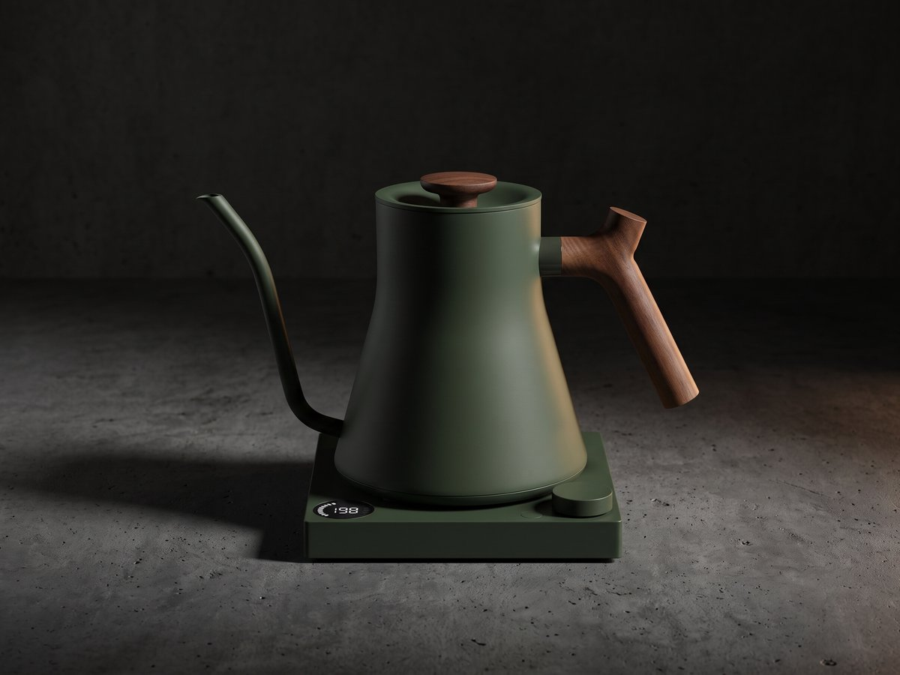
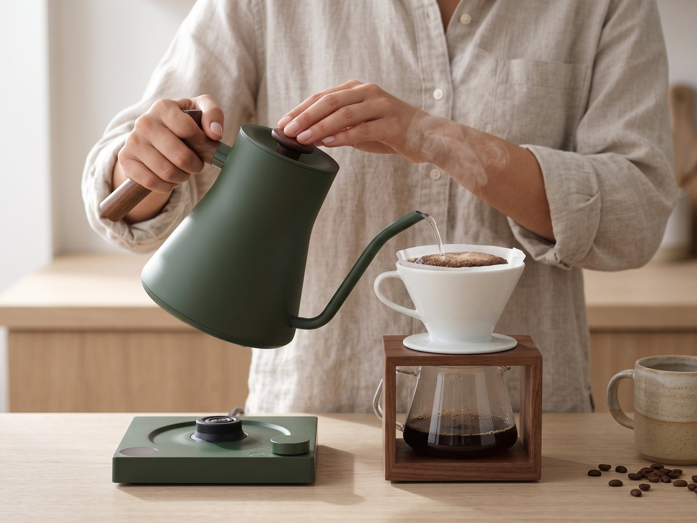
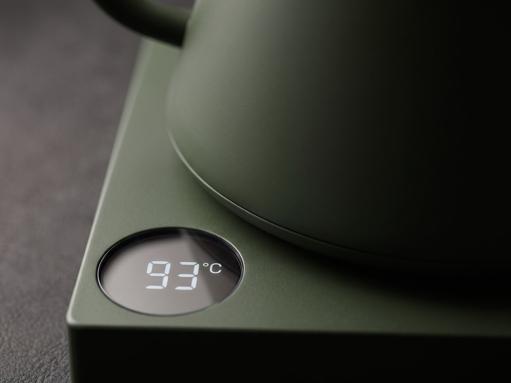
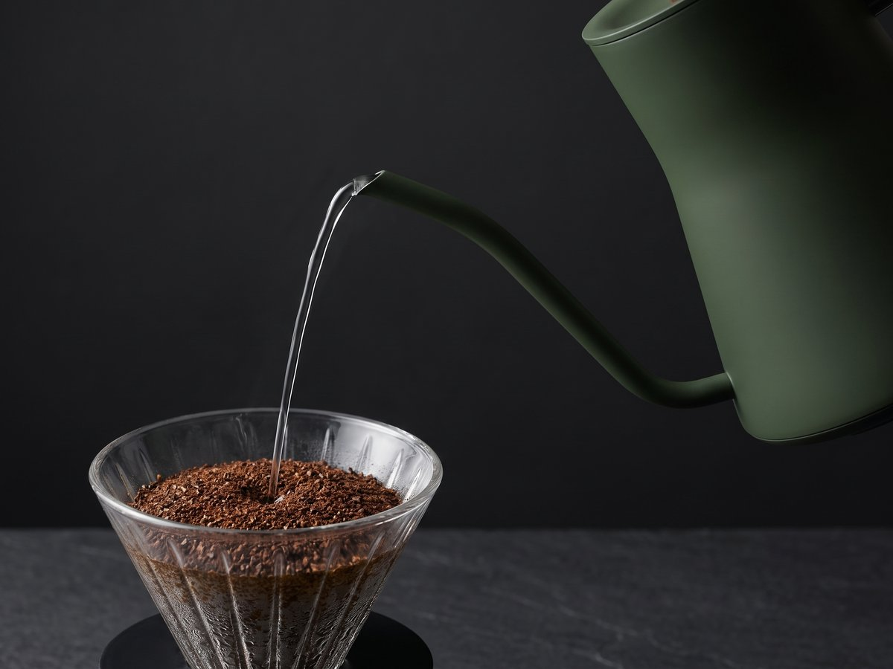
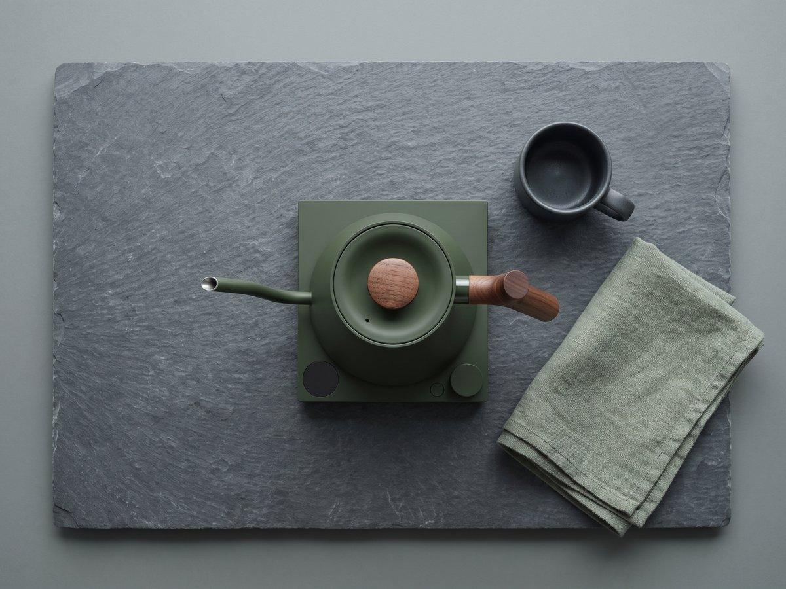
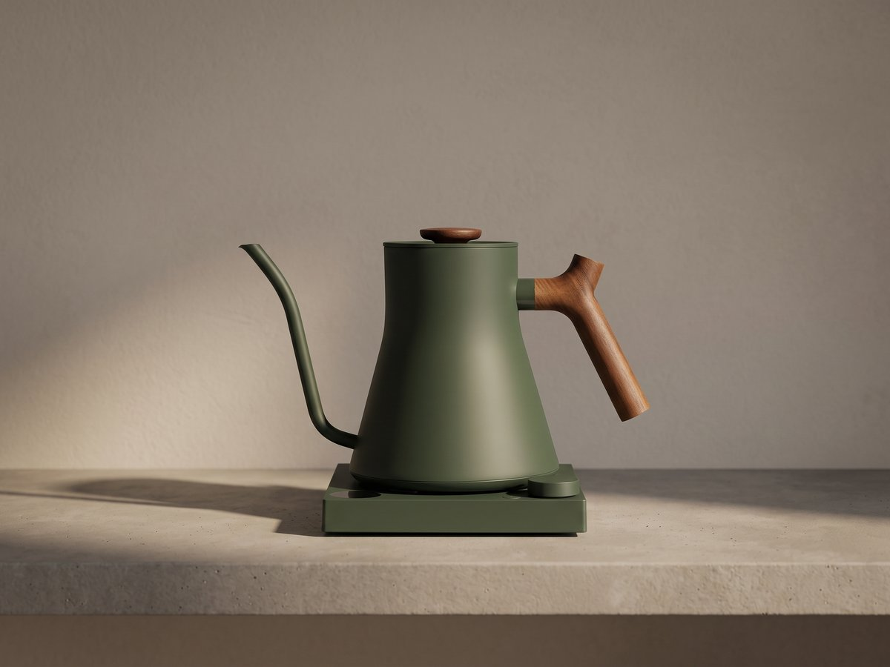
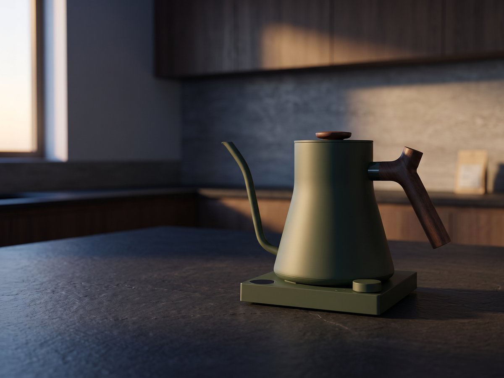

Fellow Stagg EKG · Pour-over konvice
Preciznost, která patří na linku
Voda přesně na stupeň. Káva přesně podle vás.
4 990 Kč · skladem

Fellow Stagg EKG je konvice pro domácí baristy a milovníky filtrované kávy, kteří chtějí přesnou kontrolu teploty i designový kus na linku. Matné kovové tělo z nerezové oceli 304, kruhový displej a úzký husí krk spojují minimalismus, preciznost a prémiový dojem.
Zajistit si Fellow Stagg EKG za 4 990 Kč
Rituál
Každé ráno. Přesně tak.
Příprava kávy začíná klidem a přesností. S Fellow Stagg EKG nastavíte vodu na přesnou teplotu v rozsahu 40–100 °C po 1 °C a při přípravě pour-over se můžete spolehnout na udržení teploty po dobu 15, 30, 45 nebo 60 minut.
Kontrola teploty
Teplota není detail
Kontrola teploty je v této konvici hlavní předností. Výkon 1000–1200 W pomáhá rychlému ohřevu, objem 0,9 litru je ideální pro každodenní přípravu a přesné nastavení po jednom stupni dává jistotu při každém nalití.


Ergonomie
Husí krk pro čistý pour-over
Úzký husí krk pro přesné nalévání je klíčem k rovnoměrnému proudu vody. Díky němu máte nad naléváním větší kontrolu, což je při pour-over zásadní pro konzistentní výsledek v šálku.
Designový objekt
Forma, která nezastarí
Minimalistické industriální pojetí podtrhuje matné kovové tělo, kruhový displej a proporce 282×172×196 mm. Hmotnost 1 400 g dodává konvici pevný, kvalitní pocit a z Fellow Stagg EKG dělá výrazný, ale čistý prvek moderní kuchyně.

Matné kovové tělo s industriálním, nadčasovým charakterem.
Pevný, kvalitní pocit v ruce.
Kompaktní proporce pro moderní linku.
Čistý ovládací bod bez vizuálního šumu.
Technické parametry
Navrženo pro přesnost
- Výkon1000–1200 W
- Objem0,9 litru
- TěloNerezová ocel 304
- Rozsah teploty40–100 °C po 1 °C
- Udržení teploty15 / 30 / 45 / 60 min
- Husí krkÚzký, pro přesné nalévání
- Rozměry282×172×196 mm
- Hmotnost1 400 g
Proč Stagg EKG?
Proč Stagg EKG?
Běžná konvice vám vodu jen ohřeje. Fellow Stagg EKG přidává přesnou kontrolu teploty, úzký husí krk pro přesné nalévání a možnost držet zvolenou teplotu po dobu, kterou potřebujete. Pro filtrovanou kávu je to rozdíl, který poznáte hned při přípravě.

Recenze
Co říkají domácí baristé
Domácí baristé ocení, že Fellow Stagg EKG spojuje preciznost, husí krk, kontrolu teploty a čistý design do jednoho nástroje. Milovníkům filtrované kávy přináší jistotu, že každý detail přípravy má pod kontrolou.
„Konečně konvice, kde teplota není hádanka. Pour-over mám ráno po ránu stejný — přesně tak, jak jsem ho nastavil.“
„Husí krk dává kontrolu, kterou jsem u běžné konvice neznal. Design je navíc na lince poctivý kus.“
„Udržení teploty 60 minut znamená, že si kávu udělám ve vlastním tempu. Žádný spěch, žádný kompromis.“
Fellow Stagg EKG
Udělejte z přípravy kávy rituál
Objednejte si Fellow Stagg EKG za 4 990 Kč a dopřejte si konvici s kontrolou teploty, úzkým husím krkem, objemem 0,9 litru, výkonem 1000–1200 W, tělem z nerezové oceli 304, rozsahem 40–100 °C po 1 °C, udržením teploty 15/30/45/60 minut, rozměry 282×172×196 mm a hmotností 1 400 g.
Zajistit si Fellow Stagg EKG za 4 990 Kč4 990 Kč · Doprava zdarma · 2 roky záruky
